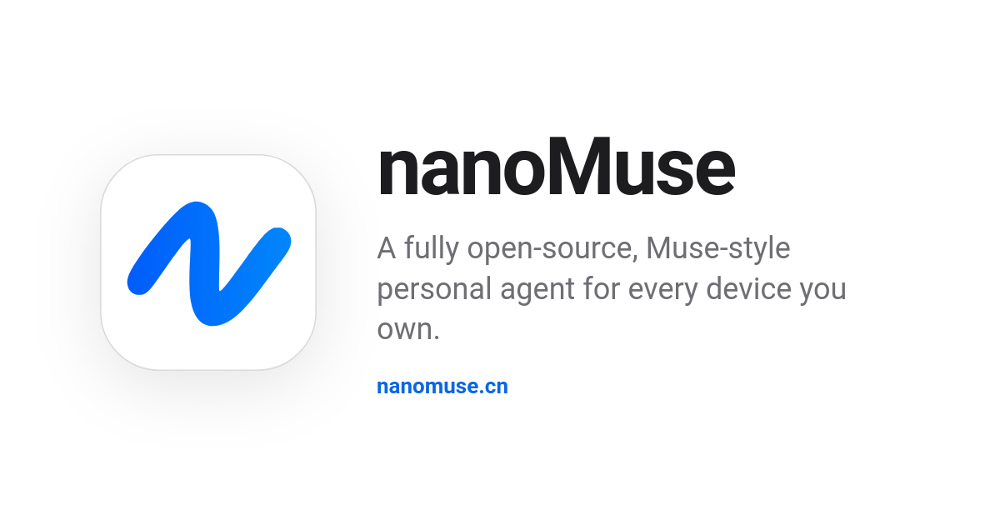

Threads｜nanoMuse：跨裝置、可自架的開源個人 Agent，將高風險操作置於 Sentinel 授權關卡

一句話摘要
nanoMuse 想做的不是另一個聊天機器人，而是一個可跨手機與電腦執行、可自行選模型與中繼、且把「能否動手」交給明確授權機制控制的個人 Agent 系統。
官方已可確認的資訊
- 專案為 **nano-muse/nanoMuse**，採 GPL-3.0-or-later；官方描述為非營利、開源的跨裝置個人 Agent。
- 論文為 *nanoMuse: An Open-Source Personal Agent for Every Device You Own*，arXiv:2610.08699v1；作者 Guangyi Liu、Yong Liu、Jiangning Zhang，於 2026-10-06 提交。
- 官方提供 Android、iPhone／iPad TestFlight、macOS、Windows、Linux 與網頁展示；各裝置以同一帳號共享對話，亦可使用自有模型金鑰或自行架設 relay。
- 官方文件稱其可使用 shell、瀏覽器、MCP servers 與 skills；在支援的平台上可透過螢幕進行 GUI／computer-use 類操作。
- 專案把刪除、傳送、付款等不可逆操作交給名為 **Sentinel** 的關卡要求核准；密碼、驗證碼與 CAPTCHA 交由使用者自行完成。
與一般聊天式 AI 的差異
聊天模型通常只輸出答案；Agent 則必須持續處理「理解目標 → 選擇工具 → 執行 → 觀察結果 → 必要時修正」的閉環。nanoMuse 的架構重點在於讓每台裝置各有 agent 與工具，並透過 relay／hub 相互委派：例如由手機提出需求、桌面端完成檔案或瀏覽器工作，再把狀態或核准請求送回手上的裝置。
這不代表手機可無條件遙控任何電腦。目標設備必須在線、對應程式與權限必須存在，且網路、作業系統與登入狀態都會影響任務能否完成。
工具策略：API 優先、GUI 為後備
從官方 README 與 Threads 貼文可整理出一條合理的工具階梯：
- **Skills／CLI**：優先使用可重現、可檢查的命令與專用技能。
- **MCP 與 API**：透過有結構的介面連接服務。
- **Browser automation**：用於網頁讀取、填表與操作。
- **GUI／Hands**：目標沒有 API 時，再以螢幕、視覺與點擊處理。
GUI 操作覆蓋面廣，卻最易受畫面變動、彈窗、權限、登入、CAPTCHA 與焦點切換影響。應將它視為後備方案，而不是可取代穩定 API 的萬用解法。
記憶：可讀寫比「自動記住」更重要
貼文提到 SOUL.md、USER.md、MEMORY.md、HEARTBEAT.md 等可讀寫 Markdown 檔案；官方也說明 agent 的身分、知道的內容與喚醒時間可由使用者閱讀與編輯。這種設計帶來可稽核性，但仍要面對過期資訊、錯誤摘要、重複記錄與多設備同步衝突。
實務上，應把個資、金鑰、付款資料與高度敏感內容放在明確隔離的祕密管理機制中，不因「記憶可編輯」就直接寫進一般 Markdown 檔。
導入前的安全清單
- 先在非工作主帳號、測試資料與隔離目錄驗證工作流。
- 採最小權限：檔案、瀏覽器、終端機、訊息與付款權限不可一次全開。
- 對「傳送、刪除、購買、公開發佈」保留逐次或工作區範圍的人工核准，並檢查 Sentinel 的實際行為。
- 自架 relay 或使用自有 API key 前，確認日誌、對話、截圖與檔案的保存位置、存取權與備份策略。
- macOS 版官方 README 註記未 notarised；僅應從官方 GitHub release 下載並核對 release notes 與校驗值。
- GPL-3.0-or-later 對修改後散布有相應義務；企業導入或二次發佈前應做授權審查。
它與 Meta Muse 的關係
nanoMuse 在官方 README 中將自己定位為受 Meta Muse 啟發、但可開源與可自行部署的替代方案；它是獨立社群專案，官方也明確聲明未獲 Meta Platforms 認可或背書。兩者功能、資料處理方式、可用地區及安全保證不能直接畫上等號。
原始與查核連結
- Threads 原貼文：https://www.threads.com/@yuqi._.0313/post/DeUA_xbEyKf
- 官方網站：https://nanomuse.cn/
- GitHub：https://github.com/nano-muse/nanoMuse
- 論文：https://arxiv.org/abs/2610.08699
- 本文擷取紀錄：source-archive/2026-10-10-threads-yuqi-nanomuse-open-source-personal-agent.json